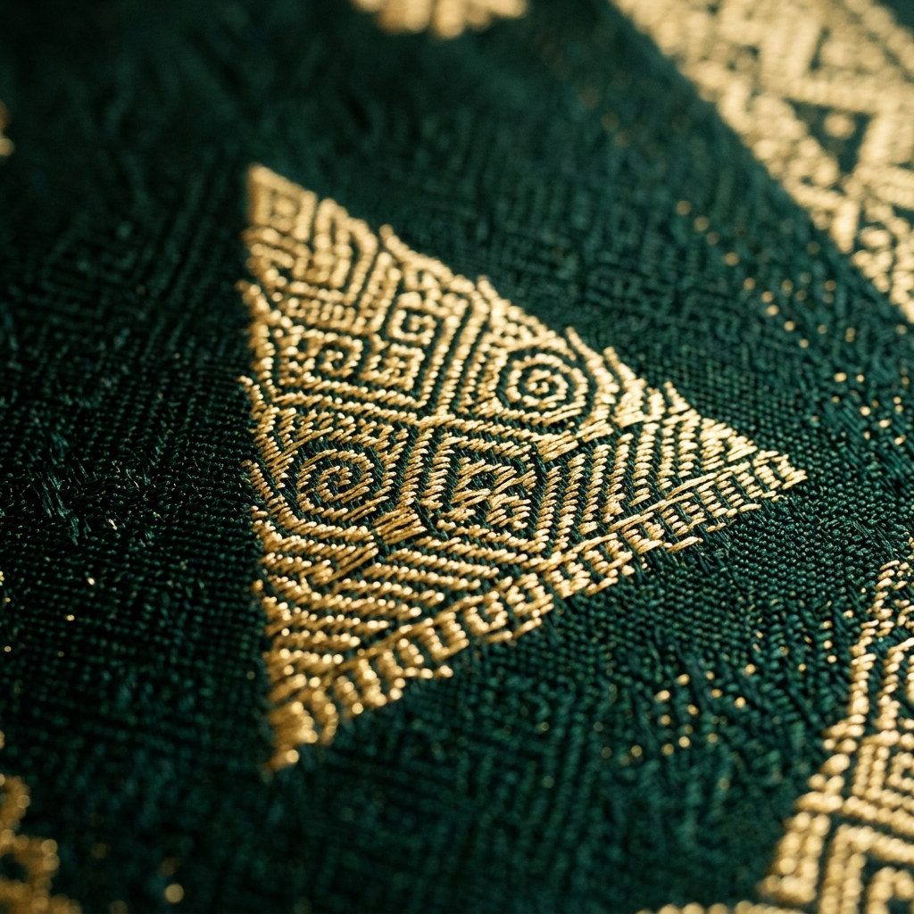

Motif Pucuk Rebung
Pola segitiga bambu yang melambangkan kekuatan hati serta proses ketahanan manusia mengejar kualitas luhur layaknya tunas yang tumbuh.
Baca Selengkapnya"Benang emas ditenun rapi, Menjadi songket indah sekali,
Pucuk rebung hiasan hati, Adat Melayu takkan mati."
Eksplorasi makna filosofis mendalam di balik ragam hias kain budaya peradaban nusantara.

Pola segitiga bambu yang melambangkan kekuatan hati serta proses ketahanan manusia mengejar kualitas luhur layaknya tunas yang tumbuh.
Baca SelengkapnyaCorak awan yang berarak tenang, merepresentasikan kelembutan hati, kesopanan yang luhur, dan keluwesan dalam menjaga adat budaya.
Baca SelengkapnyaKain tradisional pesisir Kota Pontianak, menyadur lekuk insang ikan sebagai representasi masyarakat bernafas di tepian muara sungai.
Baca SelengkapnyaMembawa filosofi kebaikan hati dari buah manggis, bahwa kondisi dari rupa luar mapun isi dalam menyimpan kejujuran manis yang abadi.
Baca SelengkapnyaTerinspirasi sayap kelelawar patah, menjiwai pemaknaan kepribadian jujur dan keberanian pemimpin pelindung keselamatan satu negeri.
Baca SelengkapnyaSusunan flora bunga jalin-menjalin menyiratkan ikatan persaudaraan nan erat dan toleransi antar sesama menuju kehidupan sejahtera.
Baca SelengkapnyaTarian barisan berjalan rapi sejajar itik, merujuk kepada sistem nilai kedisiplinan beramai di tengah kemajemukan suku bermasyarakat.
Baca SelengkapnyaMetafora abadi dari koloni sarang lebah madu, penghormatan kepada pahlawan ilmu dan insan pemberi manfaat murni tanpa pamrih.
Baca SelengkapnyaMelambangkan kelapangan ruang di sebuah wadah, menyimpan pedoman hidup ikhlas bergotong royong di lintas perbedaan kebudayaan.
Baca Selengkapnya